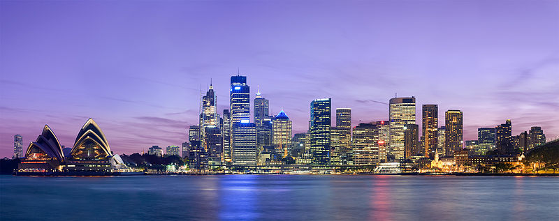

Australia Bound
While there is still a great deal of world left for me to explore, I have to admit that I've managed to see many of the places I was really hoping to over these last few years. In the last 18 months I've visited Argentina, Uruguay, New York City, Ireland, Scotland, Oahu (Hawaii), Thailand, Malaysia, Singapore, Bali (Indonesia), South Africa, England, New Zealand, Brazil, Malta, Italy, France and Serbia. I also did a few trips around Canada, including Toronto, Ottawa, Hamilton, and Montreal.
This year I really only had two goals in terms of where I wanted to visit. The first one is Machu Picchu, the Lost City of the Incas, located near the city of Cusco in Peru. The second place I really wanted to visit this year is Australia. My friend Vanesa (from Buenos Aires) has been telling me for years what an amazing place it is, so I decided last year that I would make it a priority this year. I was originally thinking of going around May, but a friend of mine in Sydney convinced me that I really should try and go as close to summer as I can.
So about a week ago I decided I would head down to Australia for a few weeks at the end of the month. I leave Canada on Wednesday, February 27th, and arrive in Sydney, Australia in the morning on Friday, March 1st (I lose a day because I have to cross the date-line).
 Sydney, Australia. Photo from Wikipedia.
{kind=link}
I don't really have any accommodation lined up, and other than visiting a few friends and checking out the beach scene, no real concrete plans. I've been told by more than a few people that I should also visit the city of Melbourne, so I'm going to try hard to make it there as well.
This isn't a vacation for me - I'll be working during the days, same as I do when I'm in Canada. But during the evenings and weekends I plan to do some exploring. This is a trip I've been looking forward to for a long time, so it'll be great to finally go "down under". The only downside is the 15 hour flight to get there, but I'm pretty sure I have enough ativan to get me through it.